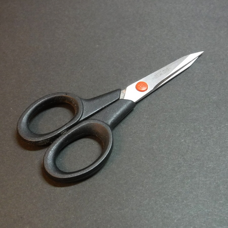
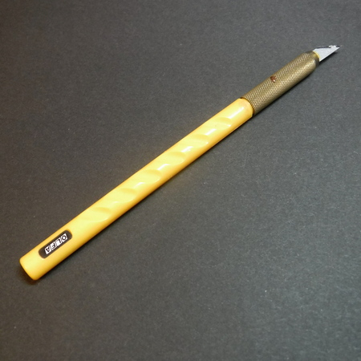
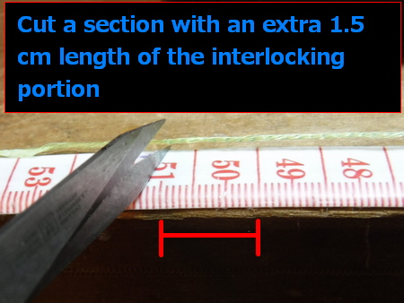
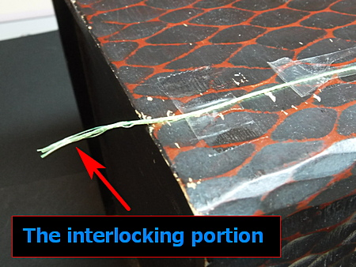
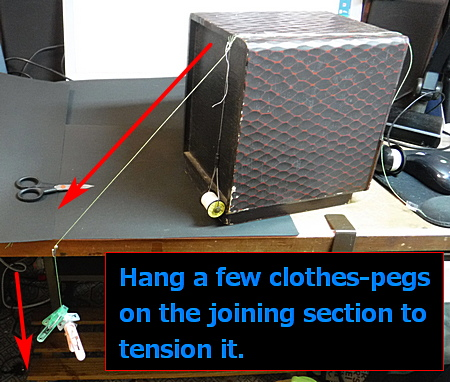

Tenkara fishing
Making furled tapered Tenkara lines
In recent years, tapered lines have become "non-mainstream" in the Japanese Tenkara fishing scene. Compared to level lines (most of them are fluorocarbon monofilament), tapered lines have their advantages, and the drawbacks that have been mentioned are not so fatal if you make them carefully.

In short, the right line for the right job, and if you use it in the right way for the right fishing spot and fishing method, the tapered line can perform very well. Many people on the Internet have tried to make their original tapered line in various ways.
In this article, I would like to introduce my current production method. This is a combination of the traditional method of using horse tail hair i.e. "basu" to make a furled tapered line, and the method of connecting two sections of the bladed line, as described on pages 69-74 of the book "Kebari tsuri no tanoshimi kata: How to enjoy Tenkara fishing - Introduction to Tenkara fishing for Yamame and Iwana" by Mr Hirotoki Kuwahara, which was my reference book when I started Tenkara fishing in 1982.
The tapered line has the great advantage of being easy to cast and easy to learn for those just starting in Tenkara. Therefore, I thought it would be a good idea to make it as inexpensive and easy as possible for beginners to do it on their desks without using a large space, large jigs, or expensive power tools. ..... This is what I had in mind.
This was my first thought, but it escalated and I ended up buying a lot of tools. Please understand.
Contents of this article
2. Necessary tools and equipment
2-2. Useful tools and materials if you have
3. Reference furled tapered lines for Tenkara
5. The cutting process of the base nylon monofilament
6. Furling/twisting process
6-2. Furling with Handy Yarn Twister
6-3. Furling with Rubber Winder for rubber-powered model aircraft
6-4. Furling with String Ⅱ (High-speed braid maker)
6-5. The combination of furling
7. Joining each section from butt to tip
8. Measuring the finished weight and recording the design
1. Materials required
- Fishing line as the base material for furled tapered Tenkara lines.
Nylon monofilament in fluorescent colour is the best. It is supple, easy to twist and highly visible. You can choose any brand/colour you like. However, if you try to catch very spooky fish or fish in the waters under heavy angling pressure, you should choose a clear nylon monofilament.
In this example, DAIWA JUSTRON #2 ("2 gou", called in Japan), standard diameter 0.235mm (0.00925in, 8lb test), fluorescent yellow is used.
A slightly cheaper class is also acceptable. You can save money if you buy a spool that is wound as long as possible. The thickness of #2 (0.235mm, 0.00925in, 8lb) or #3 (0.285mm, 0.01122in, 12lb) is recommended because it is easy to furl and could be finished nicely.From now on, let me call the strand, base nylon monofilament, "B-N-M" in short.
 DAIWA JUSTRON #2, fluorescent yellow
DAIWA JUSTRON #2, fluorescent yellow
(500m spool, 1,445 yen, 12.6US$,
as of 2021/09, at amazon.co.jp) - Quick-drying glue [alpha-cyanoacrylate adhesive] in a bottle with a small brush. The brush type is easy to apply to the B-N-M.
- Clear nail polish (fast-drying topcoat)

If you apply it to finish off the joints after the use of thread and quick-drying glue, it will give a slightly more natural look to the shiny shades after the quick-dried glue has dried.
This is completely a matter of make-up and mood. It has nothing to do with the performance of the taper line or your fishing results.
You can use the head cement for fly tying instead. - Silk thread for fly tying
In this example, I used UNI-Thread, 220D, 3/0-W, a white, slightly thick thread. I use a thick thread because I use much tension when joining each section. The colour is your choice. UNI-Thread, 220D, 3/0-W
 UNI-Thread、220D、3/0-W
UNI-Thread、220D、3/0-W
The image is taken from amazon.co.jp
You can also use #40 stretch sewing thread, 100% nylon.
 #40 stretch sewing thread, 100% nylonThis stretch sewing thread will be a bit more complicated than silk thread, as it will kink in the tying process. However, it is inexpensive, so I recommend it. (110yen ,1US$, including tax as of 2021/09)
#40 stretch sewing thread, 100% nylonThis stretch sewing thread will be a bit more complicated than silk thread, as it will kink in the tying process. However, it is inexpensive, so I recommend it. (110yen ,1US$, including tax as of 2021/09) - Lillian thread (for connecting the tapered line to the tip of the Tenkara rod)
In this example, I used NISSIN's high-grade Lillian thread (1m, 3ft). The price was 220 yen, 2US$, including tax at a fishing tackle shop. (as of 2021/09)
 NISSIN (1m, 3ft)
NISSIN (1m, 3ft)
As for the impression that I tried to use the thinner type, I think that the superfine type is more suitable.
2. Necessary tools and equipment
2-1. Essential tools
- Bobbin holder for fly tying
 Fly Tying Bobbin Holder
Fly Tying Bobbin Holder - Small scissors that cut well
Doesn't have to be specifically for fly tying. Sewing scissors from a handicraft shop will do.

- A design knife or a razor with a handle

- Sewing tape measure
A simple tape measure without a reel, available in most handicraft shops. It should be attached to the edge of your desk with double-sided tape to help you measure and cut the B-N-M quickly.
 Sewing tape attached to the desk
Sewing tape attached to the desk - Three clothes-pegs/clothespins
They are used for weight to tense a section of the tapered line at the joining process. - Sticky tape and Both side types, like 3M's products.
- Oil-based pen
Marking how many strands of B-N-N does each section have and marking which direction has the section been furled. - Workbench for joining each section: 25-30cm (10-12in) high.
(a stack of thick books can be used instead)
 Used to joining furled B-N-M together.
Used to joining furled B-N-M together.
2-2. Useful tools and materials if you have
- Handy Yarn Twister 58-783 made by Clover of Japan
 Handy Yarn Twister 58-783 made by Clover of Japan
Handy Yarn Twister 58-783 made by Clover of Japan
If you are good with your hands, you can furl/twist the B-N-M together by thumb and index finger. But with this Handy Yarn Twister, anyone can quickly, evenly, and nicely furl together the strands of the B-N-M.
 Hand-cranked dial and yarn hook which can be turned in both directions.With the Yarn Twister, you can furl the B-N-M in both directions, which is difficult to do with fingers. As I write this, I worked with the yarn twister yesterday, and when I tried hand twisting today, I was able to do the twisting together at a good speed even with hand twisting. However, the finish was more even and beautiful with the yarn twister.
Hand-cranked dial and yarn hook which can be turned in both directions.With the Yarn Twister, you can furl the B-N-M in both directions, which is difficult to do with fingers. As I write this, I worked with the yarn twister yesterday, and when I tried hand twisting today, I was able to do the twisting together at a good speed even with hand twisting. However, the finish was more even and beautiful with the yarn twister.
One of the drawbacks of a hand-furled tapered line is that when you cast, the line stretches out and twists, causing the loop to tilt, which in turn is transmitted to the leader and eventually trains off the landing point of the "kebari", fly.
I first noticed this when I was practising casting to a target in a park.The disadvantage of furled tapered lines is also pointed out in Masami Sakakibara's book, "Tatta hitotsu no kebari de shoubu: Only One Kebari for the Game", p97, p124.
I think that with a hand-tapered line that is unidirectionally aligned from the butt section to the tip section, force is accumulated in the loop that is created during casting, and when the loop is extended, the force is released and transmitted to the leader and the kebari then rotates them, causing the kebari to deviate to the left or right. That's what I'm thinking.
In this example, I tried to solve this problem by using a yarn twister to furl each successive section in clockwise and counterclockwise directions and then join them from butt to tip.
The yarn twister is used on a desk with a bookend shown in b. c. below, or with a small bench vice for the model craft. If you don't have one of these, you can still use the twister by putting duct tape on both sides of the twister and fixing it on your desk. - Bookend (for fixing yarn twisters)
 Bookend (for holding the Yarn Twister)
Bookend (for holding the Yarn Twister) Use of the Tarn Twister held with bookend
Use of the Tarn Twister held with bookend - Small vice for hobby crafting
In this example, I use GREENCROSS 60mm.

 The Yarn Twister on a small bench vice
The Yarn Twister on a small bench vice
You can use it not only for making tapered lines but also for various other work. - Fly tying vice
This is useful for joining furled sections together. The small bench vice above will do the job, but it's a bit tricky. A tying vice will give you more room under the jaws to work. If you are already a Tenkara/fly angler, you might already have one. Be careful to hold the furled strands of B-N-M too tight. You might harm the strands. So protect the section with a few thin papers when using the tying vice.
 Joining a tapered line with a fly tying vice. I use several sheets of paper to cushion the line because it gets scratched when I pinch it directly with the vice.
Joining a tapered line with a fly tying vice. I use several sheets of paper to cushion the line because it gets scratched when I pinch it directly with the vice. - Rubber winder for rubber-powered model aeroplanes
As a substitute for the yarn twister described in a. above, a model company called Studio Mido sells a light plane winder (high-speed rubber winder, gear ratio 1:4).
 Rubber winder for rubber-powered model aeroplanesAvailable from the Studio Mid online store.
Rubber winder for rubber-powered model aeroplanesAvailable from the Studio Mid online store.
Delivery is free in Japan at Yodobashi.com, the official website of Yodobashi Camera.
Winder [Plastic model products]
(1,188 yen, 10US$, including tax, as of 2021/09, free delivery within Japan)
It is a pity that this rubber winder can only rotate in one direction. - Olympus Thread - String Ⅱ (High-speed braid maker)
A product of OLYMPUS THREAD MANUFACTURING CO., LTD.
Although the author has not used it yet, there are other products in the same category as the Yarn Twister.
(4,263 yen, 37US$, incl. tax, 2021/10, at amazon.co.jp)
 OLYMPUS THREAD - String Ⅱ
OLYMPUS THREAD - String Ⅱ
Image taken from the manufacturer's website.
The String-II is characterized by its ability to turn and twist in both directions, just like the Yarn Twister. Furthermore, by switching the stopper, it is possible to twist each of the three B-N-M separately (preliminary twisting), or to twist all three B-N-M together (finish twisting).
(Click here for the video clip explaining how to use it. Note: the language of the video is Japanese.)The B-N-M for making tapered lines is thin and supple enough, so they would be furled together with only doing the finish twisting process I guess. If you have a bookend, you can fix the body of the braid maker without any problem.The only problem with the product is that it is a little bit pricey. I'm sure I'll be the first to buy one If I started making and selling the furled tapered Tenkara lines.
Although, the price is the equivalent of three or four furled tapered lines on the market, so for those who have the financial leeway, the price is completely affordable.
3. Tapered lines used as reference
I used the various taper lines described below as a reference. In particular, I took into consideration the weight of the line and used it for actual fishing, and then designed my line.
- Fujino's Nylon Tapered Line Soft Tenkara
Opaque orange
Total length 3.3m (11ft), Weight 0.72g (0.0254oz).
 Fujino's Nylon Tapered Line Soft TenkaraThe product is not a furled tapered line. Like a fly fishing tapered leader, the nylon gradually tapered from butt to tip end smoothly. From the author's feelings and experience, this is a relatively lightweight tapered line. It is a well-made product that is supple and has good visibility.
Fujino's Nylon Tapered Line Soft TenkaraThe product is not a furled tapered line. Like a fly fishing tapered leader, the nylon gradually tapered from butt to tip end smoothly. From the author's feelings and experience, this is a relatively lightweight tapered line. It is a well-made product that is supple and has good visibility.
（1,013 yen, 9US$, 2021/10, at amazon.co.jp） Fujino's Nylon Tapered Line Soft Tenkara
The image is taken from amazon.co.jp
One of the disadvantages of furled/braided tapered lines is that when a fly is caught on an obstacle like a tree branch on the other side of the stream, and the angler has to cut the line by grabbing the but end and pulling it strongly, the entire furled tapered line becomes tangled and kink.
Fujino nylon tapered line, soft Tenkara does not have this disadvantage. It never makes messy kinks after being forced to cut the leader.
If you use this product carefully, it will last for several years, so I think the price is reasonable. - MaxCatch Tenkara Braided Nylon: Fly Fishing Line & Furled Leader
Total length 3.3m (11ft), weight 7.77g (0.2741oz).
 （7.99US$：891yen、2021/10、at MaxCatch website)
（7.99US$：891yen、2021/10、at MaxCatch website)
The image is taken from the MaxCatch website
The line is very heavy. It weighed more than 7g.
I used the product to fish for rainbow trout at a private fishing pond. Because of its heavyweight, when it landed on the water, my kebari was pulled backwards to me rapidly.
It's inexpensive, but I have the impression that it can only be used in a few situations like very windy days or casting bulky flies. - Very old taper line for Tenkara
I bought this line about 33 years ago, and it was probably the best product on the market at that time.
Total length 3.35m (11ft-20in), weight 0.94g (0.0332oz).
- A tapered line I made by myself using nylon monofilament nearly 30 years ago
Total length: 3.5m (11ft-20in), weight: 1.31g (0.0462oz). - A tapered line I used to make by myself using nylon monofilament, medium thickness version
Total length 3.2m (11ft), weight 0.80g (0.0282oz).
tip butt The thickness of nylon mono at each section #2, 2, 3, 3, 2, 3 (gou) The number of strands at each section 2, 3, 4, 5, 4, 3.
I don't remember what I used as a reference, but interestingly, the middle of the line is the thickest (5 strands of #3), and the design is like a "weight forward" fly fishing line. I can not remember the reason or reference which I used. The weight is only 0.8g, but it cast well.The possibility of the design of taper is almost infinite. So please try to make or find the best design that suits your Tenkara rod and your fishing style and your favourite waters!
4. Taper design
In this article, I will make a "standard" tapered line that is about the same length as a Tenkara rod. In the example, the length is 3.6m (12ft).
The following is a series of know-it-all calculations that look like they should be, but please note that there may be some stupid calculation errors by the author!
- First of all, if you want to divide the total length 3.6m (3600mm: 12ft) into 6 or 8 sections, the length of one section, L will be...
6 sections: L = 600mm (23.6in)
8 sections: L = 450mm (17.7in).
- Next, find the volume V (in cubic mm) of one strand of a section from the standard diameter D of the B-N-M (might be printed on the spool of the product), its radius R (in mm) and its cross-sectional area A (in square mm).
Sorry for your inconvenience, from now on, I calculate these values with millimetres and grams units. Inches and ounces are too complicated for me.
#2 (2 gou) Standard diameter D = 0.235 mm
Radius R = 0.1175mm
Cross-sectional area A = R × R × PI (3.1416) = 0.0434 (square mm)
6 sections: volume V = L (600mm) × A = 26.04 (cubic mm)
8 sections: Volume V = L (450mm) x A = 19.53 (cubic mm)
- Then, using the specific gravity of nylon monofilament (1.14), find the weight.
1cc (1 cubic cm) of water = 1000 cubic mm weighs 1.0g, so 1 cubic mm weighs 0.001g.
The weight of 1 cubic mm of nylon line is
0.001g x 1.14 = 0.00114g, so
6 sections, 26.04 (cubic mm) x 0.00114g = 0.0297g
8 sections, 19.53 (cubic mm) x 0.00114g = 0.0223g
- The next step is to work out how many strands of B-N-M should be furled together to create the tapered shape of the six or eight sections. In the example, the taper is divided into 6 or 8 sections, so the design of the taper will be
6 sections: 8, 7, 6, 5, 4, 3 strands
8 sections: 8, 8, 7, 6, 5, 4, 3, 3 strands
The first taper design is simple and easy to make, and the second has a slightly longer butt and tip section.
As a general rule, the thicker and longer the butt section, the more power you have, and the bigger and heavier flies you can cast. On the other hand, if you make the tip section thinner and longer, you can cast a fly gently and quietly. (If I'm wrong, please let me know.) - Then multiply the weight per one B-N-M you calculated earlier by the number of strands, you can get the weight of each section.In the case of 8 sections, the weight per section is as follows
８： 0.0223g × 8 = 0.1784g
８： 0.0223g × 8 = 0.1784g
７： 0.0223g × 7 = 0.1561g
６： 0.0223g × 6 = 0.1338g
５： 0.0223g × 5 = 0.1115g
４： 0.0223g × 4 = 0.0892g
３： 0.0223g × 3 = 0.0669g
３： 0.0223g × 3 = 0.0669gIn the case of 8 sections, the weight per section is as follows = 0.9812gFor your information, a fluorocarbon monofilament level line of 3.6m(12ft) long, with a specific gravity of 1.78#3.5(gou), diameter 0.310 mm, cross-sectional area 0.0755 sq. mm
Total weight = 0.484g#4(gou), diameter 0.330 mm, cross-sectional area 0.0855 sq. mm,
Total weight = 0.548gTherefore, the tapered line in the example is about twice as heavy as the fluorocarbon level line in the calculation.
You can download the Excel spreadsheet from this link.
(Inspected by an online virus check site www.virustotal.com No macros, VBA are used.)With a tapered Tenkara line of 3.6m (12ft) and a weight of about 1.0-1.5g (0.0353-0.0529oz), the fly would not be pulled back to the angler after landing on the water surface, which is called "Otsuri" phenomenon, even if you are fishing the pocket water on the opposite bank across the current.For the tapered line shown in the example, the total length of the B-N-M required is about 19.8m (65ft). If you take into account the shrinkage during the furling process and the extra line required for joining, you will probably end up with about 25-28m (82-92ft).I used a B-N-M with a 500m (1,640ft) spool, so that's enough to make for 18-20 furled tapered Tenkara lines. Well, that's enough for a lifetime, isn't it?
{kind=link}
5. The cutting process of the B-N-M
- Cut the B-N-M, to a length that is longer than the length of one section (450mm, 17.7in, for an 8-sections line) that was determined at the design stage.The important thing to remember is that by furling, the twisted B-N-M will be shorter than when you cut it! This is why the number of strands is important. For this reason, in sections with a large number of strands, say 8 to 5, you need to cut the B-N-M quite long, otherwise, you will run out of length after the furling process is finished.In my experience, it may be a bit too much, but it is also necessary to allow longer for the subsequent joining process, so for the 8-5 strands section, I cut the 450mm (17.7in), designed length to 700mm (27.6in) about 50% more.
For the 4-2 strands section, I cut the 450mm (17.7in) to about 600mm (23.6in), about 30% more. - For an 8-strands section, cut out 4 pieces of B-N-M of 700mm x 2 = 1400mm (55in).
For a 7-strands section, cut out 3 pieces of 700mm x 2 = 1400mm (55in), plus 1 piece of 700mm (27.6in).
It is a good idea to use a tape measure stick it onto the end of your desk to make it easier to take measurements when cutting. Use double-sided tape.
Use double-sided tape to attach the tape measure to your desk. - The spool of the B-N-M should be placed on the opposite side of your dominant hand in a box or a drawer of your desk. The B-N-M would be pulled out smoothly without slamming or crunching.
 Keeping the spool of nylon monofilament in a drawer on the opposite side of your dominant hand makes pulling out of the line much easier.
Keeping the spool of nylon monofilament in a drawer on the opposite side of your dominant hand makes pulling out of the line much easier.
6. Furling/twisting process
6-1. Furling by hand
- Bend the cut B-N-M in the middle of it, and pinch the loop with the thumb and index finger of your dominant hand.
 Pinch the loop with your thumb and index finger.
Pinch the loop with your thumb and index finger. - Gently hold the two strands of the B-N-M (yellow lines) by the opposite hand. Then slowly move the hand to the outside direction (red arrow), and squeeze the B-N-M a few times to remove any curls that may remain when the line is pulled out from the spool.
 Squeeze the B-N-M a few times to remove any curls.
Squeeze the B-N-M a few times to remove any curls. - Pinch the side of the loop by about one inch with the thumb and forefinger of the non-dominant hand, then gently press down. Here, lightly let the first B-N-M hang from between index and middle fingers. And let the second hang from between little finger and palm. Then let them hang down under your non-dominant hand into the space where the two B-N-Ms can move or rotate freely.
 The long yellow line indicates the 1st B-N-M. The shorter line indicates the 2nd B-N-M.
The long yellow line indicates the 1st B-N-M. The shorter line indicates the 2nd B-N-M.
Hang them down under your non-dominant hand. - Move the thumb of your dominant hand forward, and move the index finger backwards. Then the two B-N-Ms are furled/twisted together and form a strand.

- At the same time, slide your dominant hand smoothly outward from your body (red straight arrow). If the pressure of the two fingers that are pinching the two B-N-Ms (fingers of the non-dominant hand) is appropriate, you can feel the movement and furling process of the two nylon coming together between the two "belly" of your thumb and index finger.
If the pressure is too little, the two B-N-Ms will not be furled neatly. On the other hand, if the pressure is too strong, the two B-N-Ms will be "stuck and dead" between your fingers, and you won't be able to perceive the sensation of the two B-N-Ms getting together. This may be a little difficult to understand just by reading the text, but when you tried and got a bit of experience, you would understand what I mentioned here. At the same time, slide your dominant hand smoothly outward from your body (red straight arrow).
At the same time, slide your dominant hand smoothly outward from your body (red straight arrow).
Basically, the slower you slide your dominant hand, the more tightly furled the B-N-M will be. The faster you slide, the coarser the B-N-M will be. - When you start to furling the B-N-M, the two lines that are not yet twisted might start to "spin and tangle" as they hang below your hand. So, slowly twist them together, being careful not to let this happen. If they got tangled, stop furling and gently untie it with your dominant hand.
 The two B-N-M that are not yet twisted, might start to "spin and tangle" under your non-dominant hand.
The two B-N-M that are not yet twisted, might start to "spin and tangle" under your non-dominant hand. - When you are done, let go of your non-dominant hand, hang the furled strands from the top, and rub them gently to remove any quirks or unnatural sagging. Don't worry if there are some rough spots in the first round of the furling process.
 The part that is not furled/twisted properly.
The part that is not furled/twisted properly. - Repeat the process from step 3., this second furling is the finishing. If you are not familiar with the process, it is best to do the finishing process again and then do it three times to get the best results.Since you are a hobbyist, not a professional, you should take your time and make it beautiful until you are satisfied.When the two B-N-M are twisted, you don't need to use quick-drying glue to fix the ends together. The strand won't separate.
- When joining three or more strands together, the beginning of the strand will be beautiful, but the end will inevitably be a little messy and not fit together properly.
 When joining three or more strands, the ends will be a little uneven.
When joining three or more strands, the ends will be a little uneven.
Therefore, no matter which method you use, hand furling, yarn twister, or rubber winder, you need to carefully finish the last 10cm (4in) or so by finger work.
After furling three or more base nylon together, apply a small amount of quick-drying glue to the ends with a brush, about 2 mm (0.1in) wide, to prevent them from coming apart.
 After furling three or more B-N-Ms together, apply a small amount of quick-drying glue to the ends with a brush.
After furling three or more B-N-Ms together, apply a small amount of quick-drying glue to the ends with a brush. Secure the bottle of quick-drying glue with sticky tape in a position where it will not interfere with your work.
Secure the bottle of quick-drying glue with sticky tape in a position where it will not interfere with your work. The finished strands of six B-N-Ms, which is not bad.
The finished strands of six B-N-Ms, which is not bad. - When you have finished the section with the planned number of strands, put a 2cm (1in) tab of sticky tape on the edge of the first end of the section, and write down the number of strands with an oil-based pen. If you don't do this, you will have a hard time knowing how many strands you have.
 After finishing a section, use an oil-based pen to write down how many strands are in the section.
After finishing a section, use an oil-based pen to write down how many strands are in the section. - If you are not good at hand twisting, you may want to consider purchasing the Yarn Twister, Rubber Winder, or the String Ⅱ as described before, as well as a bookend to hold the tools in place, at some expense. Both of these items can be purchased for about 1,500-4,300 yen (about 14-37US$). You will be surprised at how easy, fast, and nicely it is to get a good fit with either of these devices.
If you're asking me which is better, I recommend the Yarn Twister or String Ⅱ. They have the big advantage that they can twist in both directions!If you are good with your fingers, please try to make the furling direction clockwise and counterclockwise. This will eliminate the major drawback of the furled tapered Tenkara line mentioned before. See 6-2.1 "This is the point! for more details.
However, if you overdo it and continue to work in the opposite (unnatural) direction, your hands may get too tired and your fingers may get irritated, so please be moderate.
6-2. Twisting with the Handy Yarn Twister
- This is the important point!
If you use the Handy Yarn Twister, you can twist the B-N-M in both directions. For example, the thickest section can be twisted clockwise, the next section counterclockwise, and so on, sequentially changing the twisting direction of adjacent sections. This device eliminates the fatal flaw of a furled tapered line, which is the tilt of the loop when casting, and the misalignment of the landing point of the fly, allowing you to cast accurately to a pinpoint.When there is no wind, place a small target in a park lawn or car parking area, and cast to it. You will not be able to detect the slightest deviation without doing target casting. But with a furled tapered line with all sections twisted in a single direction and joined together, this deviation is sure to occur.So, if we divide the whole tapered line into 8 sections as in the example, we have the combination of the direction of furling like the following.
Section 1, 8 strands: clockwise
Section 2, 8 strands: counterclockwise
Section 3, 7 strands: clockwise
Section 4, 6 strands: counterclockwise
Section 5, 5 strands: clockwise
Section 6, 4 strands: counterclockwise
Section 7, 3 strands: clockwise
Section 8, 3 strands: counterclockwiseBefore starting the joining process of each section, it is necessary to plan it properly.
In addition, since there are sections with the same number of material lines (section 1 and 2, and 7 and 8), when the alignment work is finished, put a bit of sticky tape to the position where the alignment work started, then write down the number of strands and the direction of rotation. For example, you can write like these...8-CW means 8 strands and furled clockwise,
8-CC means 8 strands and furled counterclockwise.
If you don't, like the author, you won't be able to tell which section was twisted in which direction during the joining process.When you forget to write it down, you can still check it by looking closely at the strands with a magnifying glass or by untwisting them a little with your fingers. - Set the small bench vice on the desk. At this point, set the vice at a slight angle to allow room for the excess material line to hang between the desk and the body and move freely as it is being aligned.
- Hold the Handy Yarn Twister firmly with the small bench vice.
 The Handy Yarn Twister is held firmly in place with the small bench vice. The red line is the edge of your desk, and the blue line is the direction of the yarn twister.
The Handy Yarn Twister is held firmly in place with the small bench vice. The red line is the edge of your desk, and the blue line is the direction of the yarn twister. - Bend the cut B-N-M in the centre and pinch the loop with your dominant hand. Then, lightly strain the two nylon several times with your non-dominant hand, and remove the remaining curling habit that was formed when you pull out the B-N-M from the spool.
 Remove the remaining curling habit of the two B-N-Ms by lightly squeezing them several times by hand. The red arrow shows the movement of your non-dominant hand.
Remove the remaining curling habit of the two B-N-Ms by lightly squeezing them several times by hand. The red arrow shows the movement of your non-dominant hand.
In this photo, the yarn twister is secured on a bookend, it's a cheaper way. - Hang the material line on the hook of the yarn twister, and gently pinch it about 2 cm (1in) from the hook with the thumb and forefinger of your non-dominant hand. Now, lightly pinch one of the B-N-M between the index and middle fingers, and the other between your little finger and palm. Then let both of them hang in the space between your stomach and the desk.
 The yellow lines indicate the B-N-Ms. When you start to join them together with the yarn twister, the excess lines will get out of control under your hand, so keep the space where they can move freely and leave both B-N-M hanging down.
The yellow lines indicate the B-N-Ms. When you start to join them together with the yarn twister, the excess lines will get out of control under your hand, so keep the space where they can move freely and leave both B-N-M hanging down. - Rotate the white plastic dial on the yarn twister with the thumb and forefinger of your dominant hand to twist. At the same time, slide the other hand that is holding the B-N-M smoothly away from the twister.
 The red line shows the two B-N-Ms that have been already furled, the two yellow line shows the two excess B-N-Ms that are hanging down. The red arrow shows the slow movement of the non-dominant hand away from the twister.
The red line shows the two B-N-Ms that have been already furled, the two yellow line shows the two excess B-N-Ms that are hanging down. The red arrow shows the slow movement of the non-dominant hand away from the twister. - The process after this is the same as the hand furling.
6-3. Twisting with the Rubber Winder
- Place the small craft vice on the desk. At this time, set it at an angle, tilting it slightly so that the rest of the two B-N-Ms hang between the desk and your belly, leaving the space for free movement.
 The small bench vice is fixed to your desk and holds the Rubber Winder firmly.
The small bench vice is fixed to your desk and holds the Rubber Winder firmly. - Hold the circularly shaped body of the Rubber Winder with the small bench vice. Make sure that there must be enough clearance between the desk and the handle for the handle rotation. Hold the winder as far up as possible by the bench vice.
 Set the Rubber Winder on the small bench vice with enough space to turn the handle (yellow arrows).
Set the Rubber Winder on the small bench vice with enough space to turn the handle (yellow arrows).
Since the rubber winder has a higher gear ratio than the yarn twister, it tends to apply too much twist then cause over furling. So please turn the handle very slowly.
 The light blue arrow indicates the direction of rotation of the handle, the red line indicates the B-N-Ms that have been twisted together, and the yellow lines indicate the two B-N-Ms
The light blue arrow indicates the direction of rotation of the handle, the red line indicates the B-N-Ms that have been twisted together, and the yellow lines indicate the two B-N-Ms - The rest of the process is the same as described in 6-2-4.
- Instead of purchasing a small bench vice, you can use a bookend and a few heavy books, and sticky tape to hold the Rubber Winder in a suitable position for winding. It may look a bit crude and fussy, but it does the job just fine.
 The Rubber Winder is taped to the top and backside of the bookend. A few thick books are placed on top of it for weight.
The Rubber Winder is taped to the top and backside of the bookend. A few thick books are placed on top of it for weight. The Rubber Winder is fixed to the bookend with double-sided tape and transparent adhesive tape. This is also a bit of a hassle, but I did it to save some money.
The Rubber Winder is fixed to the bookend with double-sided tape and transparent adhesive tape. This is also a bit of a hassle, but I did it to save some money.
6-4. The combination of furling
- In the case of 8-piece furling, 2 + 2 = 4 strands, then add 2 more to make 6 strands, then add 2 more to make 8 strands finally.
In this way, the workload is increased, but the result is nicer than combining the thicker 4 strands with 4 together. - In the case of 7 strands, 2 + 2 = 4 strands, 2 + 1 = 3 strands, and finally 4 + 3 = 7 strands.
- Continue twisting sections 6 to 2 in the same way.
7. Joining each section from butt to tip
- Join the thicker sections first. The reason for this is that the thicker sections are easier to work with and quicker to get used to.
Check the length of the furled section with a tape measure on your desk, and apply a small amount of instant glue to the section with a brush to stop it from coming apart.
 Check the length of the section as designed and apply a small amount of instant glue with a brush to stop the section from coming apart.Note: The thickest butt section needs a loop to connect the Lillian thread, so apply super glue to the longest section, leaving about 5 cm (2in) long.
Check the length of the section as designed and apply a small amount of instant glue with a brush to stop the section from coming apart.Note: The thickest butt section needs a loop to connect the Lillian thread, so apply super glue to the longest section, leaving about 5 cm (2in) long.
 For the butt section, take about 5cm (2in) of excess length to make an end loop.
For the butt section, take about 5cm (2in) of excess length to make an end loop. - Cut a section about 1.5cm (0.6in) longer than the point where the instant glue was applied, to allow for the length of interlocking two sections.

Take an extra 1.5cm (0.6in) length to make an interlocking joint. - Secure the cut section to the joining workbench with sticky tape in such a way that the interlocking portion comes out from the end of the workbench.

Secure the cut section to the workbench with sticky tape.
If you are using a fly tying vice to hold the furled strands, place it between several layers of paper to avoid damaging the B-N-M.
When using a fly tying vice, hold the furled strands in place with a piece of paper.
Hanging from the fluorescent yellow B-N-M is the white thread and the tip of the bobbin holder. - Repeat steps 1. and 2. above for the second section.
- At this point, the ends of both sections should be unravelled and frayed.
 The ends of the left and right sections are frayed and unravelled.
The ends of the left and right sections are frayed and unravelled. - Interlock the frayed ends of each section.
 Interlock the frayed ends.
Interlock the frayed ends. - Apply a small amount of instant glue to the middle of interlocked parts and wait for it to dry.
 Temporarily fix with instant glue and wait for it to dry
Temporarily fix with instant glue and wait for it to dry - Make a ring with fly tying thread (or nylon sewing thread) and bind the centre of the interlocked portion tightly one time.
 Tie off the centre of the interlocked ends once.
Tie off the centre of the interlocked ends once. Finished tightening the thread.
Finished tightening the thread. - Apply a small amount of instant glue to the centre of the thread and wait for it to dry.
 Apply a small amount of instant glue to the tightened thread.
Apply a small amount of instant glue to the tightened thread. - Temporarily tape the opposite end of the second section to the desk. Alternatively, screw the L-shaped hook to the desk, hang it with three clothes-pegs/clothespins, and straighten it under tension. This will create a space under the workbench and make it easier to turn around the bobbin holder.

Hanging between clothes-pegs/clothespins, tensioning and straightening section. - Turn around the bobbin holder under the workbench and wrap the entire interlocking parts tightly with fly tying thread (sewing thread). Wrap the thread from the centre to the left side of the bobbin holder until it reaches the boundary between the interlocked parts and the normal strand, then wrap the thread over and over to make it thicker and to make the bumps as smooth as possible.
 Tighten the thread around the entire interlocked parts.
Tighten the thread around the entire interlocked parts. Wrap the thread so that the bumps are as smooth as possible.
Wrap the thread so that the bumps are as smooth as possible. - When you have finished wrapping the left end, continue wrapping to the right side, overlapping so that there are no bumps. Finally, make a large loop with the thread, pass the bobbin holder through it, tie it off in the centre, and then apply instant glue to the entire joint with a brush.

- Finish with a coat of clear nail polish (quick-drying topcoat) or head cement for fly tying.
 Finish with a coat of clear nail polish.Keep the length of the joint to a maximum of about 1.5cm (0.4in) for a better looking. Since instant glue is used, the connection will be stiff, but there is no problem with the movement and turnover of the finished line. It is also strong enough.
Finish with a coat of clear nail polish.Keep the length of the joint to a maximum of about 1.5cm (0.4in) for a better looking. Since instant glue is used, the connection will be stiff, but there is no problem with the movement and turnover of the finished line. It is also strong enough.
- Once all sections are connected, make a loop at the end of the butt section. The process is the same as steps 1 through 10.
 Top: Joint of the two sections.
Top: Joint of the two sections.
Bottom: a loop at the end of the butt section.I'm embarrassed by the somewhat messy finish. The connection part in particular needs to be more smoothly finished, otherwise it will be very troublesome to remove spider silk from the line when fishing the tiny bushy streams in summer. If you can create a smooth connection with no bumps and no uneven threads, you won't have to worry about cobwebs. - At the end of the tapered line
Make a small loop.
Make a hump with the figure-8 knot. Make a hump with the figure-8 knot.
Make a hump with the figure-8 knot. A hump that a "harisu" or leader will be attached has been made.
A hump that a "harisu" or leader will be attached has been made.
Attach a tippet ring for Euro-style nymphing to the tip end. In any case, use instant adhesives to prevent fraying of the ties. - Attach the Lillian thread to the loop at the end of the butt section so that it can be tied to the tip of the Tenkara rod. Cut a piece of Lillian thread 18-20cm (7-8in) long and tie both ends together to form a loop.
 Attach the Lillian thread to the loop of the thickest section.
Attach the Lillian thread to the loop of the thickest section.
Connect the loop of Lillian yarn to the loop of the tapered line using the Loop to Loop method.

8. Measuring the finished weight and recording the design
When the tapered line is completed, weigh it on a precise digital scale (if you have one) to help you create another line with a different taper design.

Length 3.6m, 8 sections, from 8-8-7-6-5-4-3-3 strands
weight 1.23g
The calculated weight was0.98g, while the weight after completion is 1.23g, which is a little heavier because of the use of thread and instant glue to connect all sections.
The completed tapered line is slowly coiled around four fingers from the thin end to form a loop. At the end of the wrapping process, pass the thick end with the Lillian diagonally around the loop three times to secure it.

To remember the design of the completed tapered line, label a plastic bag with a sticker (about 10 x 16 cm) and write down the total length, weight, number of sections, number of pieces in each section, and the date of creation.

weight, number of sections,
number of strands in each section, date of creation, etc.
If you keep them in this way and carry them with you to the fishing site, you will not forget what design they are, and you will not be confused about which one to take out that suits the fishing spot.
９．Casting test
Before you use your tapered line for fishing, please try it out. Attach a leader (about 1.5m, 5ft), then a short piece of woollen thread or a fly with the hook end cut off to the tip of the leader. Use a plastic dish as a target in a park or car park, and cast the fly at it.
It's hard to understand the characteristics of a line by just casting a fly without a target. It's also not a good reference for the next time you make your tapered line with a different design and weight.
Be sure to aim at the target and practice casting. At this time, it would be best if you take notes on how the loop of the tapered line moved forward and extend, how long the line stretches, how fast the fly lands in the water, and how you feel about the overall result.

On this day, I used a 3.2m rod, 3.6m line (a little lighter design with 7-7-6-5-4-3-2-2 strands of #2 B-N-M), and 1.5m leader to aim at an 18cm (7in)-diameter dish 5m (16ft) away. The black thing in the red circle is the fly, and it only went in about 7 times out of 100.
A closer look at the video later that the tapered line tested that day, with all the sections twisted in the same direction and connected, had a clear tendency for the fly was landed 20-30cm (9-12in) to the left of the target.
At this moment, I have not completed the combination version of clockwise and counterclockwise furling. When I finished it and tested it, I will report its performance to you.